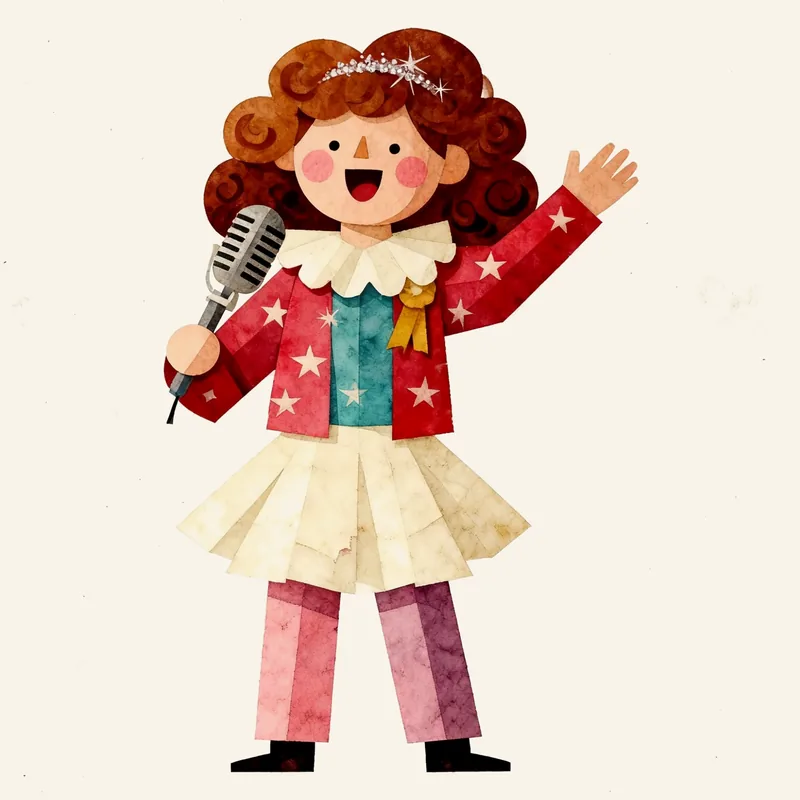

生まれ持った「気質」と、経験で育った「性格」
無料の性格診断 · 16typeplus.jp

Your temperament from birth and your character from experience
Free personality test · 16typeplus.jp/en
타고난 「기질」과 경험으로 자란 「성격」
무료 성격 검사 · 16typeplus.jp/ko